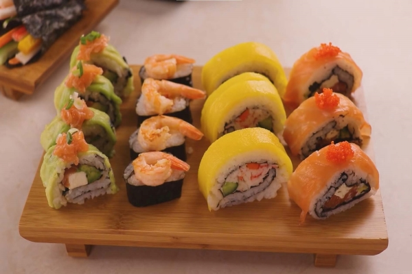
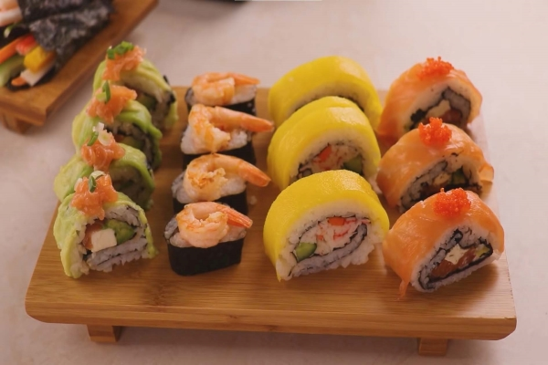

asian-sushi
Sushi is defined as any dish that is made with vinegared sushi rice. Although you can make sushi without using any fish or raw fish, many kinds of seafood are used in sushi dishes. 
Sushi is defined as any dish that is made with vinegared sushi rice. Although you can make sushi without using any fish or raw fish, many kinds of seafood are used in sushi dishes. 